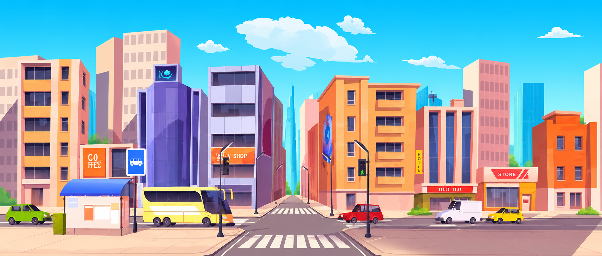

128Signalements ce mois
LA VIE DE VOTRE QUARTIER
La ville,
ensemble.
Un problème dans votre rue ? Signalez-le simplement et aidez votre ville à agir.
Déjà adopté par les habitants de Novaria

86Incidents résolus
2 406Citoyens engagés
PRÈS DE CHEZ VOUS
Derniers signalements
Nid-de-poule important Rue des Lilas · Il y a
12 min
Dépôt sauvage Parc des Tilleuls · Il
y a 1 h
Éclairage en panne Place du Marché · Il y
a 2 h
Votre quartier a besoin de vous.
Un problème repéré ? Prenez une minute pour le signaler.